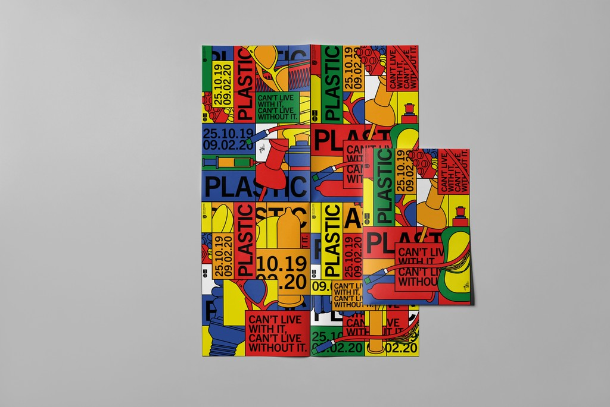
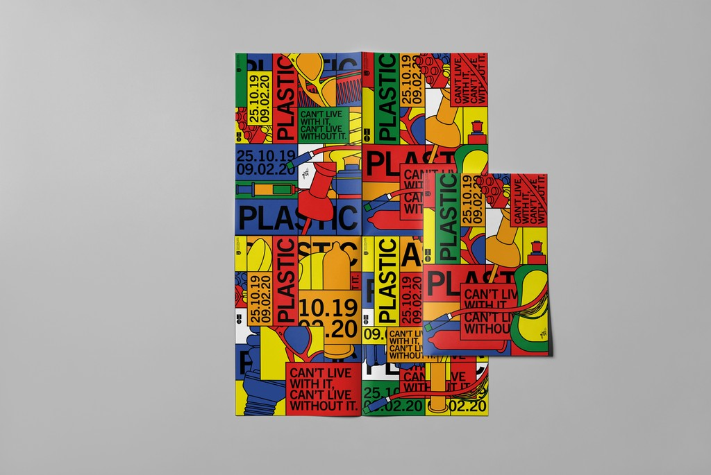

Project Details
The Plastic Exhibition marked a significant milestone as Science Gallery Dublin's inaugural national touring showcase. As the design lead, I spearheaded the conceptualisation, design execution, and delivery of all design elements essential for the exhibition.
Our primary challenge was ensuring the exhibition's adaptability for touring across Ireland. We required a system that facilitated easy packing and setting up of design elements in diverse environments without compromising quality—a task necessitating meticulous planning.
We crafted the exhibition's identity by drawing inspiration from the de Stijl movement, renowned for its bold use of primary colours reminiscent of plastic hues. These vibrant colours symbolise the mass-produced nature of plastic, anchoring the exhibition's theme. To ensure portability and versatility, we utilised coloured acrylic in the design and construction, aligning with the identity and concept. This material choice facilitated effortless dismantling and flat-packing, enabling smooth transitions between exhibition locations.
Plastic
Sentiem
Belstaff 100 Years

Olympic Handball Ireland

Opening hours
Mon – Fri: 10:00 – 18:00
Contact
rory@rorymccormick.ie